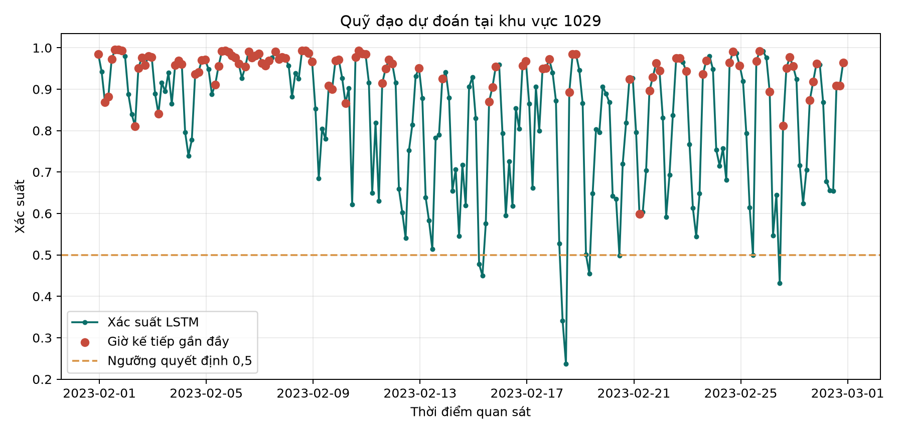
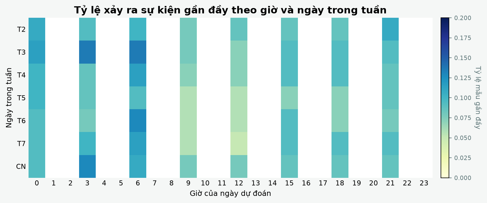
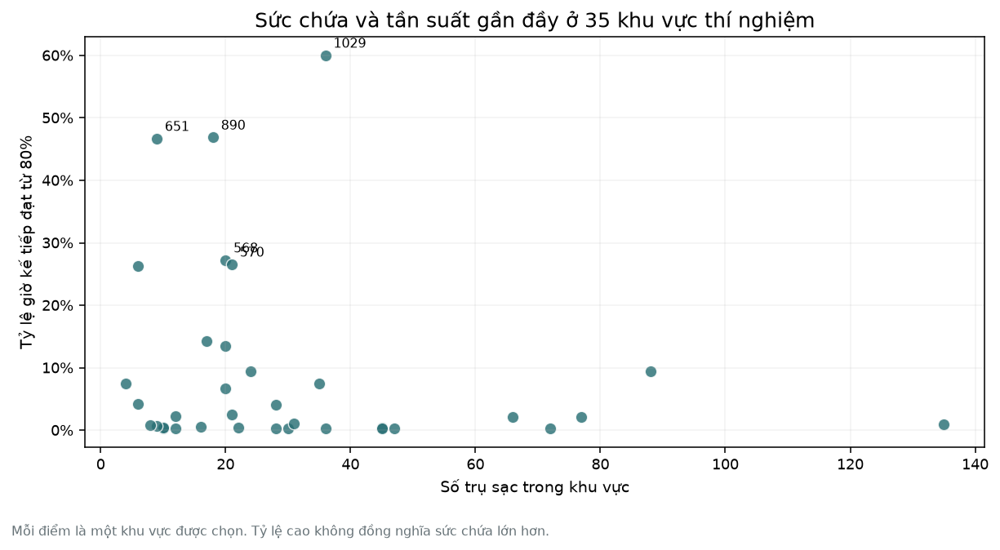
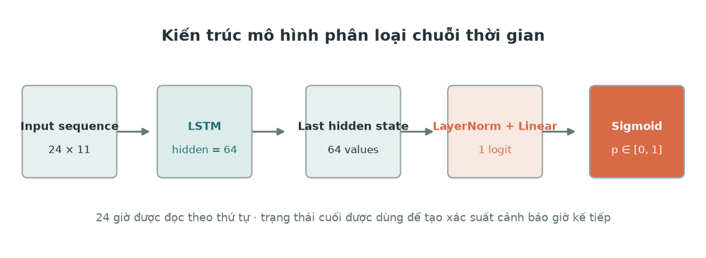

Gom một giờ quan sát
Tỷ lệ trụ bận, điện năng, thời lượng sạc, giá và thời gian trong ngày được ghép theo từng khu vực.
ĐỒ ÁN HỌC SÂU / URBAN EV
EV Watch đọc 24 giờ vận hành gần nhất để ước lượng khu vực nào có nguy cơ chạm 80% công suất trong giờ tới. Đây là tín hiệu để xem xét, không phải lời hứa chắc chắn.

BẢNG ĐIỀU KHIỂN
Chọn khu vực và mốc quan sát trong tập kiểm tra. Các con số dưới đây là kết quả đã lưu từ notebook, không phải dữ liệu trực tiếp.
Mô hình nhìn lại 24 giờ trước mốc này rồi dự đoán giờ kế tiếp.
Xác suất là mức ưu tiên, không phải cam kết chắc chắn.
So sánh với tỷ lệ đang bận và đường xu hướng.
Con người kiểm tra trạng thái thật trước khi hành động.
CÁCH ĐỌC DỮ LIỆU
LSTM nhận một chuỗi có thứ tự. Từ 24 giờ đã biết, nó trả về một xác suất để người vận hành cân nhắc mức độ ưu tiên.
Tỷ lệ trụ bận, điện năng, thời lượng sạc, giá và thời gian trong ngày được ghép theo từng khu vực.
Mỗi mẫu có kích thước 24 × 11. LSTM đọc lần lượt từng giờ và giữ lại tín hiệu có ích cho giờ kế tiếp.
Xác suất được so với ngưỡng quyết định 0,5. Ngưỡng nghiệp vụ 80% dùng để tạo nhãn thật.
occupancy_rate(t + 1) ≥ 0.80 → target_near_full = 1Nhãn lấy từ giờ sau, còn input chỉ dùng thông tin đã biết tại thời điểm t.BẰNG CHỨNG TỪ NOTEBOOK
Các hình dưới đây là những lát cắt thật từ lần chạy. Chúng giúp kiểm tra dữ liệu, cách học của mô hình và nơi tín hiệu cảnh báo xuất hiện.



KẾT QUẢ THỬ NGHIỆM
Các chỉ số được tính trên 7.840 mẫu test theo thứ tự thời gian. Kết quả tốt hơn không được mặc định dành cho mô hình học sâu.
| Mô hình | Log Loss | Brier | PR-AUC | Recall | F1 |
|---|
Log Loss và Brier càng thấp càng tốt. PR-AUC, Recall và F1 càng cao càng tốt.
Histogram Gradient Boosting tốt hơn trong lần chạy này. Đây là thông tin quan trọng vì dữ liệu dạng bảng hiện tại đã có tín hiệu mạnh. LSTM vẫn bắt được phần lớn giờ gần đầy, nhưng chưa thắng ở chất lượng xác suất.
Xem phạm vi dữ liệuBỘ DỮ LIỆU
Notebook dùng phần dữ liệu khu vực theo giờ của UrbanEV. Các trường trong file được ghép lại thành một bảng dài để mô hình có thể đọc theo khu vực và theo thời gian.
Số trụ đang bận tại khu vực trong một giờ. Chia cho charge_count để tính occupancy_rate.
occupied_pilesĐiện năng đã cấp và tổng thời lượng sạc. Hai trường này phản ánh cường độ sử dụng, không phải nhãn mục tiêu.
kWh · hourGiá điện và phí dịch vụ tại thời điểm đó. Chúng được đưa vào để kiểm tra tín hiệu liên quan đến nhu cầu.
price signalThông tin tĩnh của khu vực như sức chứa, tọa độ, diện tích và chu vi. Mô hình dùng sức chứa ở dạng log.
capacity + mapTỪ NOTEBOOK ĐẾN DEMO
Web không huấn luyện lại mô hình. Nó đọc các dự đoán đã lưu để người xem tập trung vào cách giải thích kết quả và quyết định vận hành.
Các file CSV được ghép theo khu vực và mốc thời gian để tạo một bảng nhất quán.
Notebook chuẩn hóa dữ liệu rồi xếp 24 giờ gần nhất thành một mẫu đầu vào.
Metric, xác suất và hình phân tích được lưu lại để có thể kiểm tra và tái sử dụng.
Web đọc file JSON đã lưu để người xem chọn khu vực, thời gian và hiểu tín hiệu.
GHI NHẬN NGUỒN
Đây là sản phẩm học tập cá nhân. Dataset UrbanEV được dùng từ nguồn công khai và được ghi nhận đầy đủ. Project không đại diện cho nhóm tác giả dataset và không dùng cho mục đích thương mại.